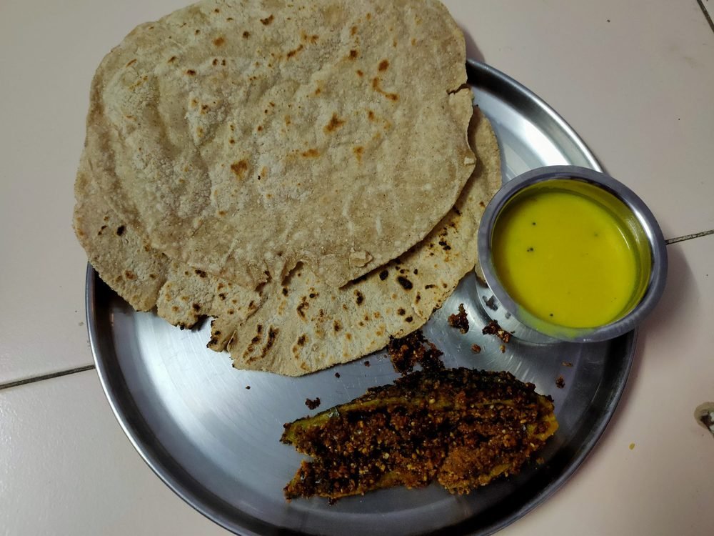

Jowar Bhakri
an unleavened sorghum flatbread patted out by hand, nutty and slightly coarse

Allergens: none of the ten listed below
Checked against the ingredient list for ten allergens: milk, egg, fish, crustaceans, tree nuts, peanuts, sesame, mustard, soy and gluten. Brands vary, so read the label on anything new to you.
Ingredients
Quantities for 4.
- 250g (about 2 cups), plus extra for dusting Jowar Flourfresh flour; old jowar flour will not bind
- about 400ml, boiling Water
- 1/2 tsp Salt
- 3 tbsp Rice Flourfor dusting, if the dough sticksoptional
Cookware
stovetop, tawa
Before you start
- Jowar has no gluten, so the dough is bound by hot water and kneading alone. The water must be at a rolling boil, not merely hot.
- Clear a patch of clean, dry counter. Bhakri is patted out flat on the surface, not rolled with a pin.
- Get the tawa heating before you shape the first one. A cold tawa gives you a leathery bhakri.
Method
- Bring the water to a rolling boil with the salt.
- Put the flour in a wide bowl and pour in about three quarters of the boiling water, mixing with the handle of a wooden spoon until it comes together in a shaggy mass.Add the rest of the water a splash at a time. Different flours drink different amounts.
- As soon as it is cool enough to touch, knead firmly for 5 minutes with the heel of your hand until the dough is smooth and shows no cracks when you press it.Knead it while it is still hot. Once it cools it will never bind, and every bhakri will crack at the edge.
- Divide into 6 balls and keep them covered with a damp cloth.
- Dust the counter with jowar flour, flatten a ball with your palm, then pat it out into a 15cm disc by pressing and rotating with the flat of your fingers.Work from the centre outwards and turn the disc a quarter every few pats, so it stays round and even.
- Brush the loose flour off, lift the bhakri on your palm and lay it onto the hot tawa.
- Smear the top surface with water using your fingers and cook 1 minute, until the wet film dries and the underside shows pale brown patches.
- Flip and cook the second side 1 minute, then flip once more and press around the edges with a folded cloth until it puffs up like a balloon.If it will not puff, the dough was too dry or the tawa too cool. It will still taste right.
- Stack the finished bhakris in a cloth-lined basket and serve hot with zunka, pithla or usal.
Storage
Bhakri is best within the hour. It keeps 1 day wrapped in a cloth and stiffens as it cools; revive on a dry tawa for 30 seconds a side with a flick of water.
Nutrition Good estimate
Low protein: 6 g a serving, 9% of the calories
| Per serving74 g | Per 100 g | |
|---|---|---|
| Calories | 266 kcal | 357 kcal |
| Protein | 5.9 g | 8 g |
| Carbohydrate | 56.9 g | 76 g |
| of which sugars | 1.2 g | 2 g |
| Fibre | 4.4 g | 6 g |
| Fat | 2.2 g | 3 g |
| of which saturated | 0.4 g | 0 g |
| of which unsaturated | 1.5 g | 2 g |
Estimated from raw ingredients using USDA FoodData Central.
Times, yields, allergens and nutrition are guidance. Use your own judgement on doneness and on storing. More in About.